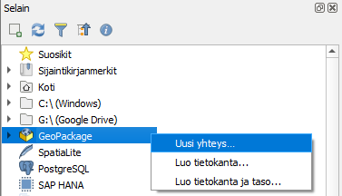
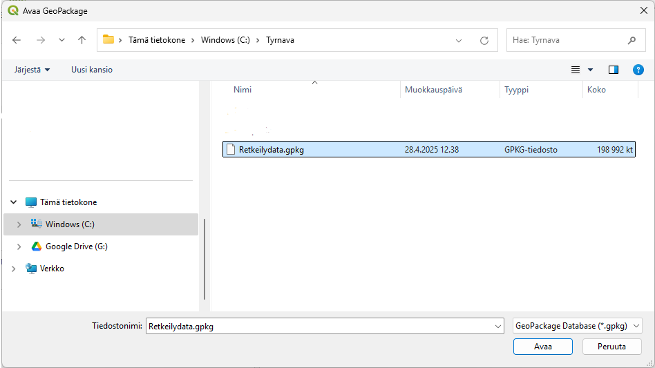
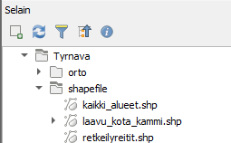
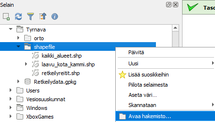
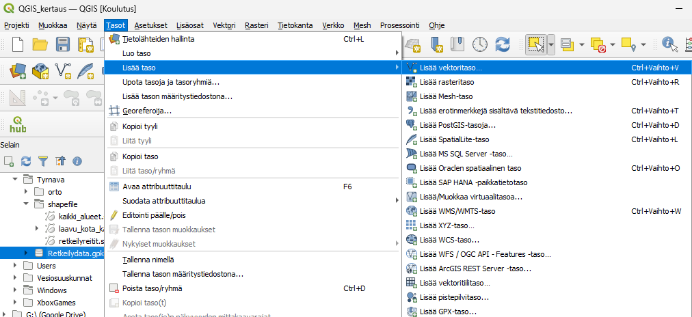
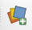
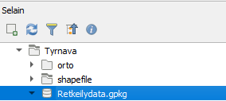
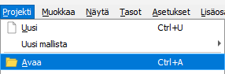
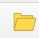

Harjoitus 2: Paikkatietoaineistot ja niiden avaaminen
Vektorimuotoisten paikkatietoaineiston tyypillisiä formaatteja ovat Shapefile, Mif/Tab, Gml, Kml, SpatiaLite, GeoPackage, DGN ja DWG. Tutustutaan seuraavaksi shapefilen ja GeoPackagen eroihin.
Shapefilen ja GeoPackagen erot
- Klikkaa Selain-paneelissa GeoPackagea hiiren oikealla ja valitse Uusi Yhteys.

- Etsi harjoitusmateriaalipaketissa tullut Retkeilydata.gpkg omalta koneeltasi ja paina Avaa.

- Paina Retkeilydata.gpkg edessä olevaa nuolta. Mitä GeoPackage sisältää?

- Etsi seuraavaksi selainpaneelin kautta harjoitusmateriaalin mukana tullut shapefilekansio ja tarkastele sen sisältöä ensin Selain-paneelissa.

- Tarkastele sitten shapefile-kansion sisältöä tiedostojen hallinnassa. Klikkaa hiiren oikealla shapefile-kansiota ja valitse Avaa hakemisto.

- Tutki Retkeilydata.gpkg aineistoa samalla tavalla.

- Miten aineistot eroavat toisistaan? Mitä etuja gpkg-tiedostolla on shapefileen verrattuna?
Paikkatietoaineistojen avaaminen
QGIS -ohjelmaan voidaan avata paikkatietoaineistoja usealla tavalla:
- perusvalikon kautta (perusvalikon kautta (Tasot > Lisää taso > valitse millaisen tason haluat lisätä)

Pikavalikon kautta 
Raahaamalla Selaimen kautta tai suoraan koneen resurssien hallinnan kautta.

Projektitiedostot puolestaan aukeavat:
- Perusvalikon kautta

Avaa -painikkeella 
Tai raahaamalla
Avaa seuraavaksi harjoitusmateriaaleja eri tavoilla.
Avaa vektoritasoja shapefilekansiosta eri tavalla: raahaamalla Selain-paneelista ja Avaa tietolähteiden hallinta painikkeen avulla.
Avaa gpkg-tiedosto raahaamalla se selaimen kautta.
Avaa retkeilydatan sisällä oleva QGIS_kertaus-projektitiedosto, joko raahaamalla selaimen kautta tai Avaa-painikkeella.
Mikä tapa tuntuu helpoimmalta? Mikä hankalimmalta? Mitä tapaa olet aiemmin käyttänyt?